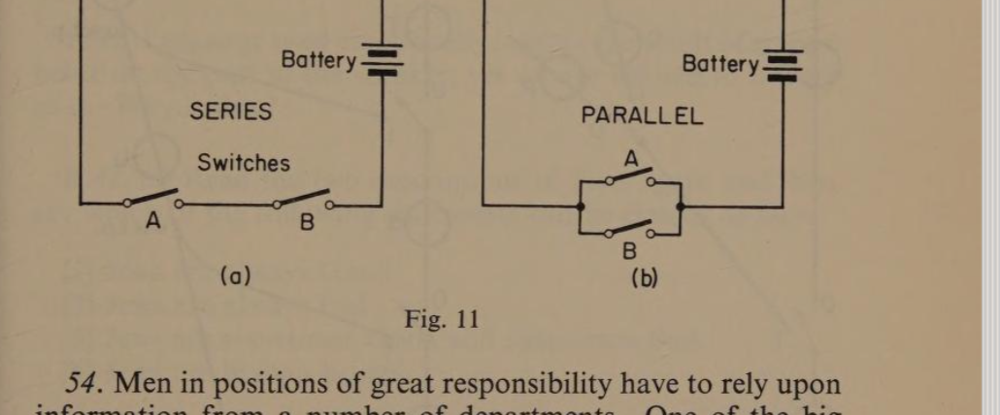
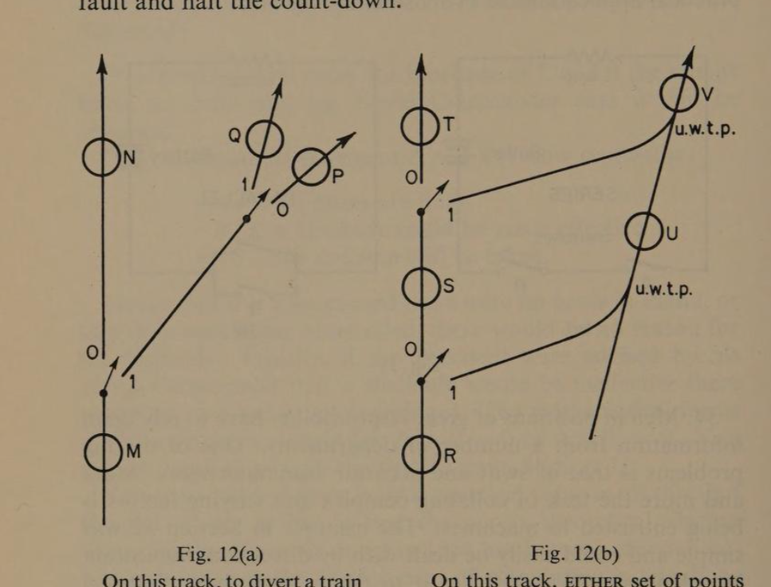

Chapter Four
The Algebra of Sentences
page 3442. When language is used emotionally it is like a mirror reflecting the user’s point of view. At the same time it distorts the facts. Many examples of this mis-use of language may be found in political speeches which praise or blame Government decisions according to the party to which the speaker belongs. For this reason one has always to beware of emotional language.
43. Loyalty is a virtue. To be loyal to one’s home, school, church, or country is a good principle to live by, but even this praiseworthy emotion has been used by unscrupulous men as an excuse for cruelty. Anti-Semitism is a case in point. Jews are often very talented. In Music, Art, and Science they have been among the most gifted people. Even though they have emigrated to nearly every other country in the world they have kept their national identity and religion. Many are hard-working and thrifty, and some have shown a remarkable aptitude for amassing wealth. This has often been resented by the people among whom they lived.
Compare this statement with the following quotation from a German newspaper, the Deutsches Volksblatt, in 1925:
‘These Jews are trying to rob the German people of their heritage. Because of their craftiness, they are parasites responsible for the ruination of our lives.’
During the Second World War from 1939 to 1945 the German Government under Adolf Hitler exterminated in prison camps and gas chambers a total of 5,750,000 Jewish men, women, and children.
44. We will begin our study of Sentence Algebra by considering the implications of a simple statement such as:
‘I will go to a show tonight if I have had my meal by 6 p.m., and if Jim will come with me.’
Here a decision is to be made which is dependent upon two factors. One is my meal-time and the other is my friend’s willingness to accompany me. Neither of them is somethingpage 35 about which I can have any doubt. They will occur or they will not. Therefore it should be possible to treat the proposition mathematically.
45. Before we can do so we must make sure our ‘Mathematese’ is adequate. We will need symbols for the elements of our sets. We will need operators to combine them, and we will need symbols to express the final relationship after they have been combined.
46. If we can borrow symbols from other branches of mathematics it will save us inventing new ones, but we must be careful in our choice. It would be foolish to use + for an element of a set when its familiar function is that of an operation. In the Algebra of Number we are accustomed to letters representing elements, so that there would be nothing confusing in allowing them to represent ‘conditions’ which are the elements of this algebra.
In the Algebra of Number we are usually concerned with size or quantity, but in the Algebra of Propositions we are establishing their being effective or non-effective. If you turn back to Section 14 you will find these symbols are 1 or 0. The reason for this is given in Section 26. We could use = to mean ‘is’, so that =1 would mean is effective, and =0 would mean is ineffective.
All we need to consider now are suitable symbols for operators.
47. Until we can define the way in which conditions may be combined we will use a neutral * to signify some kind of operation. We may now symbolise the statement like this:
That I will go to the show [if had meal by 6 p.m.] and [if Jim comes] is true.
Becomes algebraically … A * B = 1
That is to say: Condition A combined in some way with Condition B makes my intention effective.
Now consider another situation such as:
John will go if it is fine, or if Peter takes him in his car.
This may be symbolised in the same way:
That John will go [if it is fine], or [if Peter takes him] is true.
Algebraically … A * B = 1
48. The Algebra we have tentatively adopted looks the same in both cases, and we have to decide whether the same sign * will do for the operator in both cases.
In Arithmetic we use a + sign for [6 + 4], [add four to six] or [increase 6 by four], because in each we mean combine the elements 6 and 4 in the same way.
The question before us at the moment is whether or not two conditions linked by ‘and’ have the same effect upon the proposition as they do when they are linked by ‘or’.
Putting the question another way, we may ask: ‘Is A and B, the same thing as A or B?’
If they are the same in effect we can use the same operator * for both, but if they are not we shall have to use different operators to distinguish between them. We examine this question in the next section.
49. When we first considered this kind of statement in Section 44 we said that the relationships could be expressed mathematically because they were the kind which either happened or did not. If we make a list of all the ways in which the two conditions can occur we shall be able to judge how the various combinations affect the original proposition.
| Proposition | Condition A | Condition B | Truth |
|---|---|---|---|
| I will go | Had meal by 6 p.m. | Jim comes | Yes |
| I will go | Not had meal | Jim comes | No |
| I will go | Had meal | Jim doesn’t come | No |
| I will go | Not had meal | Jim doesn’t come | No |
| Proposition | Condition A | Condition B | Truth |
|---|---|---|---|
| John will go | It is fine | Peter calls | Yes |
| John will go | It is not fine | Peter calls | Yes |
| John will go | It is fine | Peter doesn’t call | Yes |
| John will go | It is not fine | Peter doesn’t call | No |
Clearly, the two cases are different. In the first, both of the conditions have to be true at the same time, this occurs onlypage 37 once out of four. In the second example, so long as either is true the proposition is true, this occurs three times out of four.
We will therefore need to distinguish between them by using different operators. Let us agree to use ∧ to mean ‘both’ and ∨ to mean ‘either or both’.* Our algebra now looks like this.
Both A and B necessary … A ∧ B = 1.
Either A or B sufficient … A ∨ B = 1.
50. Using symbols has the great advantage of conciseness. This can be seen if we compare the examples of the last section by writing them side by side and using the symbols 1 and 0 to indicate the positive and negative forms of the two conditions.
| If | A ∧ B = 1 |
| then | 1 ∧ 1 = 1 |
| but | 0 ∧ 1 = 0 |
| and | 1 ∧ 0 = 0 |
| and | 0 ∧ 0 = 0 |
| If | A ∨ B = 1 |
| then | 1 ∨ 1 = 1† |
| or | 0 ∨ 1 = 1† |
| or | 1 ∨ 0 = 1† |
| but | 0 ∨ 0 = 0† |
51. Another convenient way of showing we mean the negative form of a condition is to use a ‘dash’ after the appropriate symbol. Thus, A′ means the negative of A and is called A-not. The tables of combined conditions are even clearer by this method.
| If | A ∧ B = 1 |
| then | A ∧ B = 1 |
| but | A′ ∧ B = 0 |
| and | A ∧ B′ = 0 |
| and | A′ ∧ B′ = 0 |
| If | A ∨ B = 1 |
| then | A ∨ B = 1† |
| or | A′ ∨ B = 1† |
| or | A ∨ B′ = 1† |
| but | A′ ∨ B′ = 0† |
You should translate these statements into words, so that the logical meaning is clear in your mind.
* Note: The signs ∩ and ∪ will be found in some books.
† Note the change of operator which reads: ‘If either condition A or condition B has to hold to make a proposition effective, then if A and B occur the proposition will be effective, but if neither holds the proposition will be ineffective.’
52. You may think at this stage we have gone to a lot of trouble and taken up a great deal of time merely to be able to show the difference in meaning between two ways of saying someone may go out for the evening. But you will realise that the same structure would apply in the case of important propositions governed by two conditions. Consider a situation like the following:
‘The President will order the blockade of Eland if the missile bases are built and his Naval Commander says it will be effective.’
Our mathematical statement A ∧ B = 1 now represents:
A … the bases are built
B … a blockade could be made effective
=1 … the decision will be taken.
Notice that if it were proved there were no bases in Eland, or that they were being dismantled, there would be no reason for the blockade. Equally, if the President were advised by his Naval Commander that a blockade would be ineffective there would be no point in his ordering it. The mathematical forms of these situations would be: A′ ∧ B = 0 or A ∧ B′ = 0. You should check these with the first Table in Section 51.
You may still feel there is little practical value in all this, but the fact of the matter is that the purely theoretical algebra which George Boole invented in 1854 has become of much importance today in the development of automation in telephone systems; railway signalling and marshalling; switch-gear mechanisms; electronic computers, and similar applications.
53. We shall be dealing more fully later on with Cybernetics, as the study of Automation is called, but it might be worth while at this point to have a look at the basically simple connection between the Algebra of Logic and ‘Thinking Machines’.
There are two standard methods of wiring a simple electric circuit. One is called ‘In Series’, the other ‘In Parallel’. The diagram should make the difference clear.
For the lamp to light, the circuit must be uninterrupted from one side of the battery round to the other.
If you trace the circuit in the series diagram you will see that the circuit is not complete unless both switches are on. This corresponds to the case of A ∧ B.page 39
In the parallel diagram you should be able to trace a complete circuit if Switch A is on, or if Switch B is on, or, of course, if they are both on. This corresponds to the case of A ∨ B.
In the next section we see how such circuits may be used in practical applications of Propositional Algebra.

54. Men in positions of great responsibility have to rely upon information from a number of departments. One of the big problems is that of swift and accurate communication. More and more the task of collating complex and varying factors is being entrusted to machines. The example in Section 52 was simple and could easily be dealt with by direct communication by telephone. We shall use it to demonstrate how electrical circuitry could be employed.
Let us imagine a control room from which the order to set up a naval blockade will be issued. On a panel there is a red lamp. At the Air Force Headquarters there is an officer who, on receiving definite information that the missile bases are installed in Eland, presses a switch which is directly connected to the control panel. Nothing happens because the wiring is in series with another circuit at Naval Headquarters. The officer in charge has been working on the problem of setting up a blockade. If he is satisfied it can be done effectively, he also presses a switch. Provided both switches are operated the lamp will light and the President or someone to whom the task has been entrusted would order the blockade to begin.
Now imagine a different situation. A man is about to be launched into space. The count-down has been going on for some time, and piece by piece every item of equipment is beingpage 40 checked. As the complicated system has to be in perfect order it is vitally important that any fault is found and rectified before the capsule is launched. All the switches indicating go or not go are wired in parallel to the control room so that any one switch in the not go position will indicate the location of the fault and halt the count-down.

Fig. 12(a): On this track to divert a train at Station M so that it passes through Station Q, two sets of points must be operated. It would be a case of A ∧ B.
Fig. 12(b): On this track, irrespective of which way it passes, to ensure that a train at Station R would pass through Station V. This is a case of A ∨ B.
55. Here is another simplified application. The diagram represents railway tracks having two sets of points operated from a signal box. The moving points are the small arrows. In Fig. 12b there is also a pair of unworked trailing points. The circles represent stations.
By an arrangement of relay switches it is possible to make this sort of system entirely automatic. Accidents are prevented by having cut-out switches to prevent the points being set to admit a train if there is one already in that section of the track.
It should be remembered that machines or automatic systems don’t ‘think’, they can behave only in the way they have beenpage 41 programmed to behave by the scientists and engineers who built them.
Note: Either position of the points could be considered positive (1), or negative (0), so long as these symbols are used consistently.
Fourth Review
R.42. Language used emotionally is often the result of sincere belief on the part of the speaker, yet we are warned to beware of it. Why is this?
R.43. (a) Read the two descriptions of Jews again and then say which of the following statements can be classed as facts:
- Jews are always Good.
- Jews are always Bad.
- Jews are sometimes Good and sometimes Bad.
- Jews are human beings.
The kind of statements which are dealt with mathematically are factual not emotional. Even with the latter kind a mathematical appraisal helps us to see contradictions.
(1) Parasites live on other creatures without contributing to their welfare.
(2) People who are talented in any way must contribute a great deal to the society in which they live. Thus, people who are talented can’t be parasites.*
If we let A represent ‘being a parasite’, then A′ will represent ‘not being a parasite’. Combining these two descriptions from Section 43 we get
A ∧ A′ = 1
(b) Why can there not be any valid proposition to which −1 applies?
(c) It is suggested that Loyalty is a virtue. Do you agree? Give reasons for your opinion.
* Note: It is argued that not all Jews are talented, therefore some may be parasites; we must remember that the extract quoted was an attempt to justify the mass murder of all Jews. But in this way the source of the talented was being destroyed. History shows the price Hitler paid for this piece of crooked thinking.
R.44. (a) What are the two factors upon which the decision depends?
(b) Why is it possible to treat them mathematically?
R.45. (a) The need for three different kinds of symbol is suggested. Name them.
(b) State the purpose of each.
R.46. Here is a list of symbols used in various branches of Mathematics. Copy the list and against each symbol state its function and its meaning.
| (i) 15 | (ii) > |
| (iii) n | (iv) ÷ |
| (v) ≠ | (vi) 30° |
| (vii) ∧ | (viii) =0 |
| (ix) − | (x) √2 |
R.47. Rewrite these sentences as propositional statements, putting the main proposition first, followed by the conditions. Enclose the conditions in brackets as in the original Section 47.
(a) Mary will buy the shoes if they are brown and have straps.
(b) If there is a fault the red warning light comes on.
(c) The traffic lights change when a car depresses the pad in the road or a pedestrian pushes the button on the post.
R.48. Write the three propositions above, using capital letters for the conditions; =1 for the relationship; and * for the operator.
R.49. (a) If two conditions have to be effective together to make a proposition true, what symbol would you use?
(b) If I make two conditions necessary before agreeing is there more or less chance of agreement than if I had laid down only one condition?
(c) What is the symbol which indicates ‘either or both’?
(d) If A ∧ B = 0 can be translated as: A and B together make the proposition false. What are the translations of the following?
(i) A ∨ B = 0 (ii) A ∧ B = 1
R.50. In Table 5(a) (i), A means had a meal by 6 p.m.; B means Jim will come:
(a) If in the column under A there is a 1, what does it mean?
(b) If there is a 0 under B, what does that mean?
(c) If in any line there is a 0 under both A and B, what does that mean?
R.51. Translate into words.
(a) A′ ∧ B = 1 (b) A ∨ B′ = 0
Translate into Algebra.
(c) If it is raining and Mary agrees, I will go.
(d) Either A-not or B will make the proposition true.
R.52. (a) Why is this kind of Algebra called ‘Boolean’.
(b) How long has it been invented?
(c) Name some practical applications.
R.53. (a) In a simple electrical circuit consisting of a lamp, and a battery, and switches, what has to be true about the circuit before the lamp will light?
(b) If there are two switches and the current has to pass through both to complete the circuit, how are they said to be wired?
(c) How must the switches be wired to ensure that either one will cause the lamp to light?
(d) What kind of wiring corresponds to A ∨ B = 1?
(e) What kind of wiring corresponds to A ∧ B = 1?
(f) If the lamp lights only if switch A was on and Switch B was off, what algebraic expression would this match?
R.54. (a) In a submarine the officer responsible for firing a missile has to know the aiming mechanism is set correctly, and the missiles are ready to fire. Two other officers responsible for these checks indicate they have done so by switches wired to the control cabin. Would the switches be in series or in parallel if only one lamp is used to tell the firing officer that he may press the firing button?
(b) In a two-man space-capsule either man must be able to speak to Ground Control. How should their microphones be wired to the transmitter?
R.55. Study the diagrams in Section 55 before attempting these questions. Remember that in Fig. 12(b) the points on the right-hand track are unworked trailing points. Make sure too that you understand the note about the positive and negative positions.
(a) Write the Algebra of the points positions necessary to divert a train standing in Station M so that it will pass through Station P.
(b) Write the Algebra of the diversion of a train from Station R to Station V if it has not to pass through Station S.
(c) If in Fig. 12(a) the switch-point positions were A′ ∧ B, what would be the next station passed through by a train which at present is at Station M?
(d) Write the Algebra of the switch-point positions necessary if a train at Station R (Fig. 12(b)) has to call at Station T.
(e) A train is at Station R. The switch-point positions are A′ ∧ B. Through which two stations would the train next pass?
(f) What is the substitute for mind in a ‘thinking’ machine?